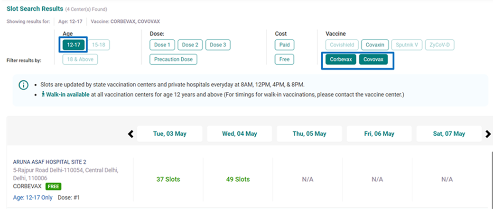
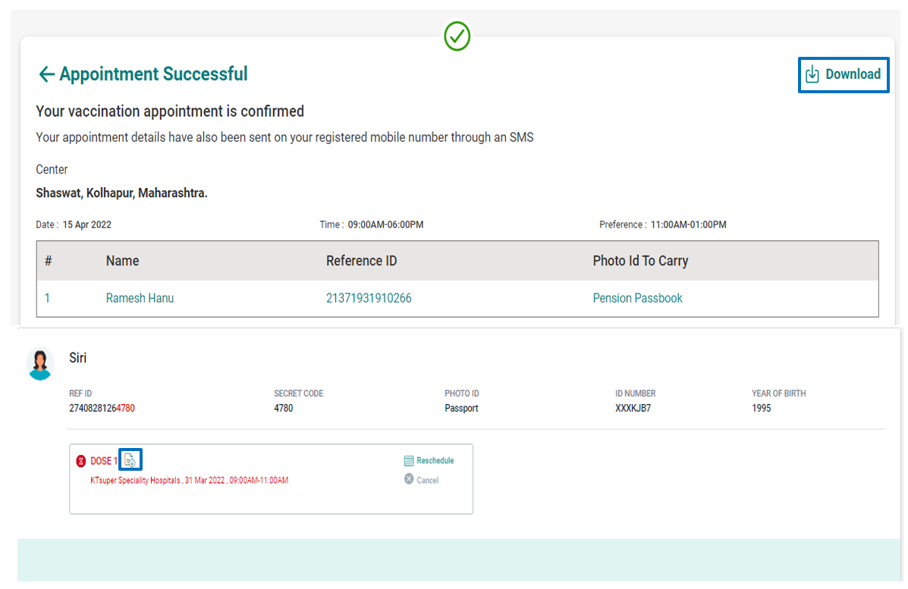
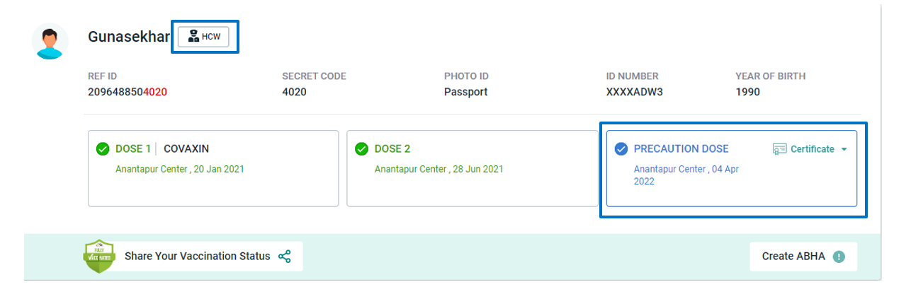
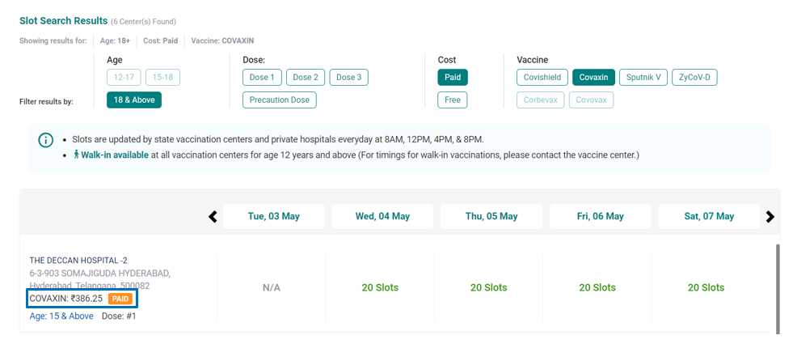

.svg)
Now Precaution dose for 18-59 age group free at Government
Vaccination Center.

If you have experienced any side effect after COVID-19 vaccination, it can be
reported on Co-WIN using your registered mobile number.

Covovax vaccine is now available for Children of the age group 12+ yrs in Private
Vaccination Center. The time span between first and second dose of Covovax is 21 days.
Children can be administered with the second dose of Covovax within a month.
Children of the age group 12-14 yrs are now eligible for the Corbevax vaccine in
Government Vaccination Center and in Private Vaccination Center 12+ yrs. The period
between a first and second dose of Corbevax is 28 days.
Covaxin is available for Children of the age group of 15+ yrs in both Government and
Private Vaccination Center. Children must be completed 4 to 6 weeks after administration
of the first dose of Covaxin to take the second dose of Covaxin. Both online and walk-in
are available.

If the date printed on your vaccination certificate differs from the actual date of
vaccine administration, you may raise a request for correction of the same by
submitting a valid proof of correct vaccination date

All fully vaccinated adult citizens (18+ and have taken 2 doses) are eligible for precaution
dose from 10/04/2022. Eligible citizens can avail precaution dose at any Government or
Private Vaccination Center. Citizens should carry their Final Certificate of vaccination
(with details of both earlier doses). Citizens should use the same mobile number and ID
card used for earlier doses.
HCWs, FLWs and Citizens aged 60 year or more, shall continue to receive precaution dose
vaccination at any CVC, including free of charge vaccination
at Government Vaccination Center.
For international travel, precaution dose can be administered to such beneficiary less than
9 months to at a minimum interval of 3 months (90 days) from the date of administration
of the second dose as recorded on Co-WlN as per requirement of the destination country.
All Vaccination Center in the State where precaution dose is being administered are
eligible to administer precaution dose.
Be a Fighter! If you are fully or partially vaccinated, you can now share your
vaccination status in your social circle. Let's encourage our friends and
followers in joining India's battle against COVID-19.
ABHA (earlier known as Health ID) is an acronym for Ayushman Bharat Health Account. Using ABHA (Health ID) is the first step towards creating safer and
efficient digital health records for you and your family. It enables your interaction with participating healthcare providers, and allows you to receive your digital lab
reports, prescriptions and diagnosis seamlessly from verified healthcare professionals and health service providers.


Raise an issue or get solutions to your Co-WIN account and vaccination certificate related issues instantly.
You can open the Co-WIN portal using the link www.cowin.gov.in and click on the “Register/Sign In” tab to register for
COVID-19 vaccination, and follow the steps thereafter.
There is no authorised mobile app for registering for vaccination in India except Aarogya Setu and Umang Apps. You
need to log into the Co-WIN portal at www.cowin.gov.in. Alternatively, you can also register for vaccination through br the Aarogya Setu App or Umang apps.
All beneficiaries who have completed 12 years of age and above on the day of registration (birth year 2011 or earlier)
can register for vaccination.
No, vaccination centers provide for a limited number of on-spot registration
slots every day. Beneficiaries can register online or walk-in to vaccination centers where the vaccination team staff can register a beneficiary. In general, all
beneficiaries are recommended to register online and schedule vaccination
in advance for a hassle-free vaccination experience.
Up to 6 people can be registered for vaccination using the same mobile number.
Up to 6 people can be registered for vaccination using the same mobile number. Beneficiaries can take help from
friends or family for online registration.
Yes, if you are 18 years or older (birth year 2005 or earlier), you can register on Co-WIN portal using any of the following ID proofs:
a AADHAAR Card
b Driving License
c PAN Card
d Passport
e Pension Passbook
f NPR Smart Card
g Voter ID (EPIC)
h Unique Disability Identification Card (UDID)
i Ration Card with Photo
If you are 12 years and above on the day of registration but below 18 years old (birth year 2006 to 2011), you can register on Co-WIN portal using any of the following ID proofs:
a AADHAAR Card
b PAN Card
c Passport
d Unique Disability Identification Card (UDID)
e Ration Card with Photo
f Student Photo ID card
No, there is no registration charge.
No, registration is required only once to create a beneficiary account on Co-WIN. Thereafter, appointments can be
booked, both online or onsite, and vaccination can be availed from the same account. It is recommended that a
beneficiary should register only once so that proper records are maintained. It is also recommended that the
registration should be done through an active mobile number to avoid problems in future.
Vaccination sessions timetables for various vaccination centers offering service, are published by the district administrators and vaccination site managers, from time to time.
Co-WIN offers vaccination services “Anytime” and “Anytime” subject to eligibility of the beneficiary. All published vaccination sessions are visible to beneficiaries on the Co-WIN system, for availing online appointment for vaccination services, as per their choice and convenience.
You can search in Co-WIN portal (or Aarogya Setu or Umang) for the vaccination center nearest to your location by
either searching through Map, PIN code or by choosing the State and the District, on the home page of Co-WIN portal.
When you search for vaccination centers, the list of centers and the sessions published for each of the vaccination
center on various dates, is displayed on screen. The number of vaccination slots available in the session are also
displayed on screen.
Following information is displayed on screen for a vaccination session –
You can use the various filters and the browsing options to locate the vaccination center, session on the date of your
convenience choice (subject to availability), for the desired vaccine (as per eligibility).
In case of non-availability of slots for scheduling appointment for vaccination in the vaccination center of your
choice, you may try scheduling appointment in other nearby centers or on some other dates for your preferred center.
The portal gives you the feature of searching vaccination centers using your PIN code and District.

Yes, it is possible that no facility near your place has published their vaccination program as yet. You may wait for
some time till vaccination facilities near your place are onboarded on Co-WIN platform, become active and start their services.
Vaccination schedules are published by the District Administrators (for government vaccination centers) and by the Site Managers (for private vaccination centers), from time to time. These managers are advised to publish longer schedules to provide sufficient advance visibility of slots to citizens. You should check again for more schedules after some time. (Please also see Q17).
Vaccination sessions are published on Co-WIN at 8:00 am, 12:00 pm, 4:00 pm and 8:00 pm every day.
Appointments for vaccination can be taken either in online or onsite mode. Vaccination is recorded only after
appointment.
Yes, you can book appointment for vaccination through Co-WIN portal (www.cowin.gov.in) or through the Aarogya
Setu App, after signing-in through your registered mobile number. The persons who are partially vaccinated outside
country, need to get vaccination in onsite mode only.
Yes, while scheduling an appointment for vaccination, the system will show vaccination center names along with the
name of the vaccine that will be administered.
The following types of Covid-19 Vaccines are available for booking appointment for vaccination based on slot availability.
The available number of slots in a session are displayed on screen for each of the sessions. If all slots are booked then instead of the number of slots, the text “Booked” is displayed. Once you have located the vaccination session of
your choice, you can book a slot online by clicking the “No. of slots”, for any session that is not marked as “Booked”.
Yes, it is as simple as that.
Once an appointment is successfully done, the system send an SMS confirmation to the registered mobile
number and also generates and displays the appointment slip. Also, on the dashboard, the “Schedule” tab changes
to “Reschedule” and the appointment details are displayed. A tab for cancellation is also displayed after the
appointment has been scheduled.
Yes, the appointment slip can be downloaded after the appointment has been scheduled.
The appointment can be rescheduled at any time. In case you are not able to go for vaccination on the date of
appointment, you can reschedule the appointment by clicking on “Reschedule”
Yes, you can cancel an appointment already scheduled. You can also reschedule the appointment and choose
another date or time slot of your convenience.
Once an appointment is scheduled, you will receive the details of the vaccination center, date and time slot chosen
for appointment in an SMS sent to your registered mobile number. You can also download the appointment slip
and print it or keep it on your smart phone. The SMS text would be –
You can search for slots after signing into your account. When you sign in, based on your eligibility for 1st, 2nd or
precaution dose, you would see the “Schedule Appointment” button.
Yes, it is recommended that both doses of vaccine should be taken for realising the full benefit of vaccination. Both
doses must be of the same vaccine type.
It is recommended that the 2nd dose of COVAXIN should be administered in the interval of 28 days to 42 days
after the 1st dose. The 2nd dose of COVISHIELD should be administered in the interval of 84 days to 112 days
after the 1st dose. The second dose of SPUTNIK V should be administered in the interval of 21 days to 90 days after the 1st dose.The second dose of CORBEVAX should be administered at the interval of 28 days after the 1st dose.The second dose of COVOVAX should be administered at the interval of 21 days after the 1st dose. The 2nd dose of ZyCOV-D should be administered at the interval of 28 days after the 1st dose. The 2nd dose of GEMCOVAC should be administered at the interval of 28 days after the 1st dose. The 2nd dose of iNCOVACC should be administered at the interval of 28 days after the 1st dose.
No, you have to take an appointment for the 2nd dose vaccination. The Co-WIN system will help you book
an appointment in a vaccination center where the same vaccine is being administered as the vaccine type (COVAXIN,
COVISHIELD, SPUTNIK V, CORBEVAX, COVOVAX, ZyCOV-D, GEMCOVAC or iNCOVACC) of the 1st dose.
If your first dose is already recorded in the system, then you are eligible for 2nd dose. The system will then show the
“Schedule” button on your dashboard for 2nd dose. When you click the “Schedule” button, the system will –
Please ensure that you are signed in using the same mobile number through which you have registered for 1st dose In such a case your first dose record will be visible on your dashboard and you can proceed to book the appointment for 2nd dose.
The following types of beneficiaries who are fully vaccinated (with 2 doses) and have completed 6 months (26 weeks)
after the 2nd dose, as per the records available on Co-WIN, are eligible to take precaution dose.
a. Health Care Workers (HCW)
b. Frontline Workers (FLW)
c. Citizens aged 18 years and more (birth year 2005 or earlier as recorded on Co-WIN). It is availed at all Government CVCs and Private CVCs in all States/UTs.
Your beneficiary type (HCW/FLW/Citizen) is now displayed on your dashboard. The system checks your eligibility and if you are eligible (based on the records available in Co-WIN), your eligibility status and due date for precaution dose is also displayed on your dashboard (please see the picture below)
Precaution dose should be taken at least 6 months (26 weeks) after the date of 2nd dose. Citizens aged 18 years and more can take precaution dose at any Government CVC or Private CVC in all States/UTs.
If you have received COVISHILED earlier, you should get Precaution dose of COVISHIELD or CORBEVAX or iNCOVACC or Covovax or GEMCOVAC®-OM, if you have received COVAXIN earlier, you should get Precaution dose of COVAXIN or CORBEVAX or iNCOVACC or Covovax or GEMCOVAC®-OM and if you have received SPUTNIK V earlier, you should get Precaution dose of SPUTNIK V. The provision for precaution doses for ZyCOV-D Vaccine is currently not available
Citizens aged 18 years and more can take precaution dose at any Government CVC or Private CVC in all States/UTs.
No, new registration is required for precaution dose. If you are fully vaccinated (received two doses) and already registered on Co-WIN, precaution dose can be administered through same Co-WIN account. In fact, precaution dose can only be recorded for those beneficiaries for whom the record of both doses are available in the system. The persons who are partially vaccinated outside country, need to be registered on Co-WIN in onsite mode only prior to get vaccination.
You can book your precaution dose either through online appointment or on-site/walk-in appointment at vaccination center based on the availability of vaccination slots. If you are eligible for precaution dose, the due date of same would be visible in your Co-WIN account and you can also able to schedule appointment. When you click on the “Schedule Precaution Dose” button, only the slots available for precaution dose will be displayed in the vaccination schedule. The schedule will be displayed only for dates on or after the date on which you become eligible. You can book the appointment by clicking on “No. of slots” and thereafter following the steps. Citizens aged 18 years and more(birth year 2004 or earlier as recorded on Co-WIN ) can take precaution dose at any Government CVC or Private CVC in all States/UTs. Citizens aged 18 years and more can schedule online appointment for precaution dose at any Government CVC or Private CVC in all States/UTs, subject to availability of vaccination slots.
If you are aged 18 years & more and are fully vaccinated (with 2 doses) and have completed 6 months (26 weeks) after the 2nd dose, as per the records available on Co-WIN, then only you are eligible to take precaution dose. If you are aged 18 years and more(birth year 2005 or earlier as recorded on Co-WIN) you can take precaution dose at any Government CVC or Private CVC, subject to availability of vaccination slots.
No, you are not required to carry or submit any document proof on co-morbidity or doctor’s advice proof at the
time of taking precaution dose.
This may happen when you have taken 2 doses but in the account in which you are signed in, your vaccination record is available for only 1 dose. In such a case, since the system does not have record of both earlier doses, the “Schedule Precaution Dose” tab is not activated. Also, if you are eligible for precaution dose but unable to book online appointment for same due to any reason, you are required to visit vaccination center to take precaution dose through on-site/walk-in appointments. Vaccinator may also help you in case Co-WIN records do not show your both vaccine doses where you may be having two dose 1 certificates taken from different accounts. This feature is under development and will be released soon.
For corrections in dates of vaccinations please see question 67.
No, currently, vaccination is free at Government hospitals. In private facilities, vaccination is priced with ceiling limits at INR 386.25 for Covishield, Covaxin & Covovax, INR 1145 for Sputnik V, INR 400 for Corbevax, INR 859 for ZyCOV-D, INR 654 for GEMCOVAC, INR 990 for iNCOVACC and INR 2299 for GEMCOVAC®-OM.
Yes, the System will show the price of the vaccine below the name of the vaccination center at the time of scheduling an appointment.
System will show the vaccine & the beneficiary can choose the vaccine being administered, only at the time of 1st dose, in each vaccination center at the time of scheduling an appointment. Beneficiary can choose the vaccination center as per their choice of vaccine being administered. Beneficiaries aged 18 year & above (born in Yr 2005 or earlier) are eligible for COVISHIELD, COVAXIN, SPUTNIK V, CORBEVAX, COVOVAX, GEMCOVAC or iNCOVACC. Beneficiaries aged 15-17 year (born in Yr 2006, 2007, 2008) are eligible for COVAXIN, CORBEVAX, COVOVAX or ZyCOV-D. Beneficiaries aged 12-14 year on the day of registration (born in Yr 2009, 2010, 2011) are eligible for CORBEVAX, COVOVAX or ZyCOV-D.
The Vaccination Centers have been directed to ensure that if a beneficiary is being vaccinated with 2nd dose, they should confirm that the first dose vaccination was done with the same vaccine as is being offered at the time of second dose and that the first dose was administered more than 28 days ago for COVAXIN, 84 days ago for COVISHIELD, 21 days ago for SPUTNIK V, 28 days ago for CORBEVAX, 21 days ago for COVOVAX, 28 days ago for ZyCOV-D, 28 days ago for GEMCOVAC and 28 days ago for iNCOVACC. You should share the correct information about the vaccine type and the date of 1st dose vaccination with the vaccinator. You should carry your vaccine certificate issued after the first dose.
Yes, you can get vaccinated in any State/District. The only restriction is that you will be able to get vaccinated only on those centers which are offering the same vaccine as was administered to you on your first dose.
The Vaccination Centers have been directed to ensure that if a beneficiary is being vaccinated with precaution dose, they should confirm that the second dose was administered more than 6 months (26 weeks) ago. You should share the correct information about the vaccine type and the date of 2nd dose vaccination with the vaccinator. You should carry your vaccine certificate issued after the second dose.
Vaccination sessions timetables for various vaccination centers offering service, are published by the district administrators and vaccination site managers, from time to time.
Co-WIN offers vaccination services “Anytime” and “Anytime” subject to eligibility of the beneficiary. All published vaccination sessions are visible to beneficiaries on the Co-WIN system, for availing online appointment for vaccination services, as per their choice and convenience.
You can search in Co-WIN portal (or Aarogya Setu or Umang) for the vaccination center nearest to your location by
either searching through Map, PIN code or by choosing the State and the District, on the home page of Co-WIN portal.
When you search for vaccination centers, the list of centers and the sessions published for each of the vaccination
center on various dates, is displayed on screen. The number of vaccination slots available in the session are also
displayed on screen.
Following information is displayed on screen for a vaccination session –
You can use the various filters and the browsing options to locate the vaccination center, session on the date of your
convenience choice (subject to availability), for the desired vaccine (as per eligibility).
In case of non-availability of slots for scheduling appointment for vaccination in the vaccination center of your
choice, you may try scheduling appointment in other nearby centers or on some other dates for your preferred center.
The portal gives you the feature of searching vaccination centers using your PIN code and District.
Yes, it is possible that no facility near your place has published their vaccination program as yet. You may wait for
some time till vaccination facilities near your place are onboarded on Co-WIN platform, become active and start their services.
Vaccination schedules are published by the District Administrators (for government vaccination centers) and by the Site Managers (for private vaccination centers), from time to time. These managers are advised to publish longer schedules to provide sufficient advance visibility of slots to citizens. You should check again for more schedules after some time. (Please also see Q17).
Vaccination sessions are published on Co-WIN at 8:00 am, 12:00 pm, 4:00 pm and 8:00 pm every day.


This new feature is added to Co-WIN which will allow you to report if there are any side effects after Covid-19 Vaccination.
Precaution dose is available for HCW/FLW and Senior Citizens, 6 months (26 weeks) after date of second dose. Precaution dose is available for now, for those who have taken Covaxin, Covishield or Sputnik V. Citizens in 60+ age group having co-morbidity should avail precaution dose on medical advice.
The precaution dose can be administered to such beneficiary less than 9 months to at a minimum interval of 3 months (90 days) from the date of administration of the second dose as recorded on Co-WlN as per requirement of the destination country.
Children of age group 15-18 yrs can now register on Co-WIN portal using AADHAAR Card, PAN Card, Unique Disability ID, Ration Card with Photo and School Photo ID Card. Only COVAXIN is approved for this age group currently.


Register Members
Search Vaccination Centers
Book Vaccination Slots
Manage Appointment
Download Certificate
Co-WIN International
Vaccinator
Department Login
Verify Certificates
Vaccination Statistics
How To Get Vaccinated
Dos and Don'ts
Overview
API Guidelines
Open API's
Grievance Guidelines
Frequently Asked Questions
Certificate Corrections
1098
Helpline: +91-11-23978046 (Toll Free - 1075 )
Technical Helpline: 0120-4783222
14567

 the ministry of health and
welfare family
the ministry of health and
welfare family